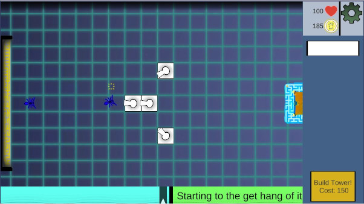
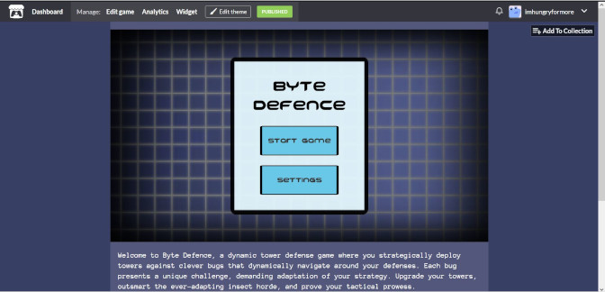

Versatile worker: coding, gaming, and graphics
I began developing Byte Defence in spring of 2023 on Unity when one of my friends gave me the idea to develop a tower defence game. I worked on it mostly during classes and breaks while studying at Metropolia. I then took a break from it because the studies became more intensive, and I didn’t have enough free time to work on it.
After selecting game studies as my major, I had a hard time coming up with a game that I wanted to do. Eventually, I decided to continue my old tower defence project that I had dropped. During spring, I coded the game very sloppily, and as I was revisiting it, I had to spend much more time in refactoring and optimizing than I had anticipated. At the start, I had planned a lot of unique gameplay elements, like abilities and environmental hazards, but ended up dropping most of them due to being forced to spend so much time on refactoring.
I was also surprised on how much time I had to spend on playtesting. Tower defence games are slow by their nature, and they have a lot of different strategies attached to them, making playtesting hard and time consuming. Luckily, I had many helpful playtesters that happily played and gave valuable feedback.
I created virtually every asset in this game, handling everything from coding to crafting sprites. I'm thrilled with the outcome, both in terms of aesthetics and gameplay. However, I never want to create or even touch Unity Ui elements ever again. Coding and designing Ui in Unity is horrible. Despite of that, during this project I grew to have more appreciation for 2D art. It’s fun!
I released the final version (hopefully) 12th of December 2023. I learned a lot during this project about coding and game design.